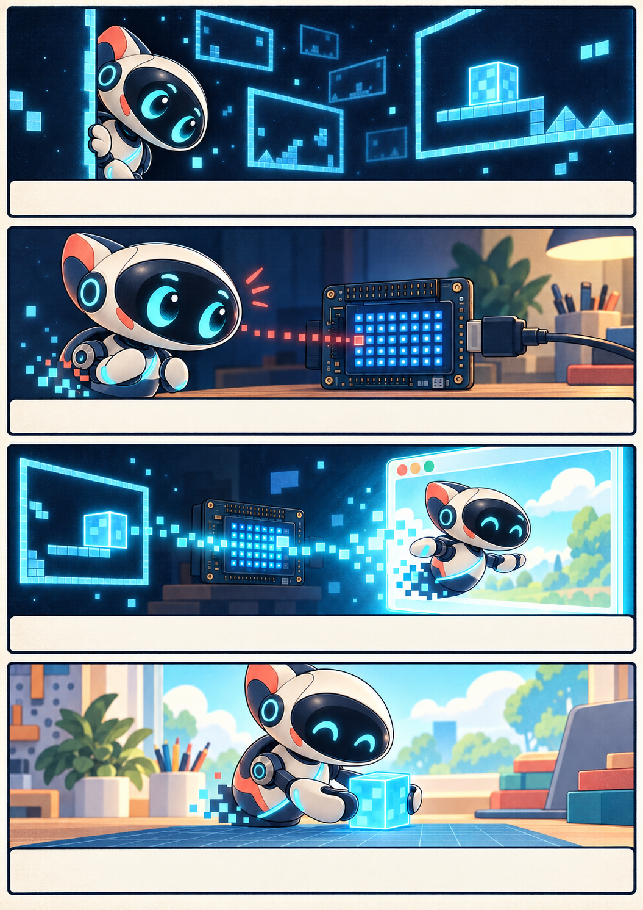

THE CHARACTER BEHIND THE COMMANDS
THIS IS
BUDDY.
Curious eyes. Careful hands. One very bright idea: there might be more to the world than the edge of a game frame.

A ROBOT WITH A STORY
OUT OF THE
DARK.
Buddy lived in the dark between game frames. A flash told him to turn; another told him to lift. He could move the pieces, but the edge of the screen was as far as he had ever gone.
Then a little grid of lights appeared beyond the game. Buddy blinked back. The lights became eyes on the UNO Q, and a larger window opened. For the first time, he could see his hands, the game table, and someone waiting for him to move.
Now every signal gives Buddy another step into the room. When the game ends, he waits for the next round.
Give Buddy a missionWHERE HE LIVES
A SMALL SCREEN.
A BIG STAGE.
The UNO Q owns Buddy's state. Its LED matrix shows little eyes and status cues; Mission on your browser shows his full body, game pieces, and movements.
ON THE UNO Q
Buddy's eyes look out from the 13×8 matrix. An hourglass marks startup; GY and SU mark the games; T acknowledges a game's Test signal.

IN YOUR BROWSER
Buddy turns, lifts, opens both hands, carries gyros or blocks, and places them on a virtual table. The scene follows the UNO Q's current state across your devices.

THE FULL-PAGE STORY
THE WAY OUT.
Buddy's first adventure is a little comic: from the lonely game frame to the light on the UNO Q, and finally into the room with you.
Read the comic PDF
ABOUT THE PROJECT
MADE FOR
THE JOY OF PLAY.
R.O.B. Vision is an open-source maker project. It uses Buddy, an original virtual companion, to make the games' light commands and accessories visible in a modern browser. It is inspired by the experience of playing with Nintendo's R.O.B.; it is independent and not affiliated with Nintendo.
WHAT WE BUILT
An UNO Q controller, a browser stage, supported RetroPie and Batocera frame links, two virtual game models, a small matrix personality, and an installation path you can repeat.
WHAT'S OPEN
The source, technical reference, test results, and engineering history are available on GitHub. Bring your own game files; no ROMs are distributed with this project.